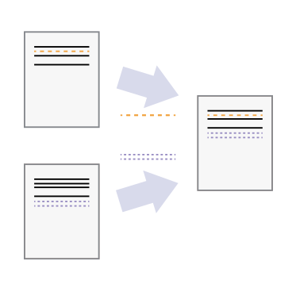

Revision control with Git#
Introduction#
We’ll start by exploring how version control can be used to keep track of what one person did and when. Even if you aren’t collaborating with other people, automated version control is much better than this situation:

Which one is actually the final version? Which order to the files actually go in (in case I wanted to go back to a previous version)?
We’ve all been in this situation before: it seems unnecessary to have multiple nearly-identical versions of the same document. Some word processors let us deal with this a little better, such as Microsoft Word’s Track Changes, Google Docs’ version history, or LibreOffice’s Recording and Displaying Changes.
Version control systems start with a base version of the document and then record changes you make each step of the way. You can think of it as a recording of your progress: you can rewind to start at the base document and play back each change you made, eventually arriving at your more recent version.

Once you think of changes as separate from the document itself, you can then think about “playing back” different sets of changes on the base document, ultimately resulting in different versions of that document. For example, two users can make independent sets of changes on the same document.
Unless multiple users make changes to the same section of the document - a conflict - you can incorporate two sets of changes into the same base document.
A version control system is a tool that keeps track of these changes for us, effectively creating different versions of our files. It allows us to decide which changes will be made to the next version (each record of these changes is called a commit and keeps useful metadata about them. The complete history of commits for a particular project and their metadata make up a repository. Repositories can be kept in sync across different computers, facilitating collaboration among different people.
Learn more
The Long History of Version Control Systems Automated version control systems are nothing new. Tools like RCS, CVS, or Subversion have been around since the early 1980s and are used by many large companies. However, many of these are now considered legacy systems (i.e., outdated) due to various limitations in their capabilities. More modern systems, such as Git and Mercurial, are distributed, meaning that they do not need a centralized server to host the repository. These modern systems also include powerful merging tools that make it possible for multiple authors to work on the same files concurrently.
Thought exercise
Paper Writing
Imagine you drafted an excellent paragraph for a paper you are writing, but later ruin it. How would you retrieve the excellent version of your conclusion? Is it even possible?
Imagine you have 5 co-authors. How would you manage the changes and comments they make to your paper? If you use LibreOffice Writer or Microsoft Word, what happens if you accept changes made using the Track Changes option? Do you have a history of those changes?
Solution
Recovering the excellent version is only possible if you created a copy of the old version of the paper. The danger of losing good versions often leads to the problematic workflow illustrated first image.
Collaborative writing with traditional word processors is cumbersome. Either every collaborator has to work on a document sequentially (slowing down the process of writing), or you have to send out a version to all collaborators and manually merge their comments into your document. The ‘track changes’ or ‘record changes’ option can highlight changes for you and simplifies merging, but as soon as you accept changes you will lose their history. You will then no longer know who suggested that change, why it was suggested, or when it was merged into the rest of the document. Even online word processors like Google Docs or Microsoft Office Online do not fully resolve these problems.
Setting up git#
When we use Git on a new computer for the first time, we need to configure a few things. Below are a few examples of configurations we will set as we get started with Git:
our name and email address,
what our preferred text editor is,
and that we want to use these settings globally (i.e. for every project).
On a command line, Git commands are written as git verb options,
where verb is what we actually want to do and options is additional optional information which may be
needed for the verb. So here is how I might setup my new laptop:
git config --global user.name "Jon Hill"
git config --global user.email "jon.hill@york.ac.uk"
Please use your own name and email address instead of mine. This user name and email will be associated with your subsequent Git activity, which means that any changes pushed to GitHub, BitBucket, GitLab or another Git host server after this lesson will include this information.
For this lesson, we will be interacting with GitHub and so the email address used should be the same as the one used when setting up your GitHub account. If you are concerned about privacy, please review GitHub’s instructions for keeping your email address private.
Caution
Line Endings
As with other keys, when you hit Enter or Return on your keyboard, your computer encodes this input as a character. Different operating systems use different character(s) to represent the end of a line. (You may also hear these referred to as newlines or line breaks.) Because Git uses these characters to compare files, it may cause unexpected issues when editing a file on different machines. Though it is beyond the scope of this lesson, you can read more about this issue in the Pro Git book.
You can change the way Git recognizes and encodes line endings using the core.autocrlf command to git config. The following settings are recommended: On macOS and Linux:
git config --global core.autocrlf input
And on Windows:
git config --global core.autocrlf false
We also need to set our favorite text editor, following this table:
Editor |
Configuration command |
|---|---|
Atom |
|
nano |
|
BBEdit (Mac, with command line tools) |
|
Sublime Text (Mac) |
|
Sublime Text (Win, 32-bit install) |
|
Sublime Text (Win, 64-bit install) |
|
Notepad (Win) |
|
Notepad++ (Win, 32-bit install) |
|
Notepad++ (Win, 64-bit install) |
|
Kate (Linux) |
|
Gedit (Linux) |
|
Scratch (Linux) |
|
Emacs |
|
Vim |
|
VS Code |
|
It is possible to reconfigure the text editor for Git whenever you want to change it.
Caution
Exiting Vim
Note that Vim is the default editor for many programs. If you haven’t used Vim before and wish to exit a session without saving
your changes, press Esc then type :q! and hit Enter or Return.
If you want to save your changes and quit, press Esc then type :wq and hit Enter or Return.
Git (2.28+) allows configuration of the name of the branch created when you initialize any new repository. We should use that feature to set it to main so it matches Gihub
git config --global init.defaultBranch main
The five commands we just ran above only need to be run once: the flag –global tells Git to use the settings for every project, in your user account, on this computer.
You can check your settings at any time:
git config --list
You can change your configuration as many times as you want: use the same commands to choose another editor or update your email address.
Hint
Git Help and Manual
Always remember that if you forget the subcommands or options of a git command, you can access the
relevant list of options typing git <command> -h or access the corresponding Git manual by typing
git <command> --help, e.g.:
git config -h
git config --help
While viewing the manual, remember the : is a prompt waiting for commands and you can press Q to exit the manual.
More generally, you can get the list of available git commands and further resources of the Git manual typing:
git help
Our first repository#
Once Git is configured, we can start using it.
We will use a story of Muske and Branston who are investigating if it is possible to send a planetary lander to Mars.
First, let’s create a new directory in the Desktop/ folder for our work and then change the current working directory to the newly created one:
cd ~/Desktop
mkdir planets
cd planets
Then we tell Git to make planets/ a repository – a place where Git can store versions of our files:
git init
It is important to note that git init will create a repository that
can include subdirectories and their files – there is no need to create
separate repositories nested within the planets repository, whether
subdirectories are present from the beginning or added later. Also, note
that the creation of the planets directory and its initialization as a
repository are completely separate processes.
If we use ls to show the directory’s contents,
it appears that nothing has changed:
ls
But if we add the -a flag to show everything,
we can see that Git has created a hidden directory within planets called .git:
ls -a
. .. .git
Git uses this special subdirectory to store all the information about the project,
including the tracked files and sub-directories located within the project’s directory.
If we ever delete the .git subdirectory, we will lose the project’s history.
Next, we will change the default branch to be called main.
This might be the default branch depending on your settings and version
of git. See the Setting up git section above for more information on this change.
git checkout -b main
Switched to a new branch 'main'
We can check that everything is set up correctly by asking Git to tell us the status of our project:
git status
On branch main
No commits yet
nothing to commit (create/copy files and use "git add" to track)
If you are using a different version of git, the exact wording of the output might be slightly different.
Thought exercise
Places to Create Git Repositories
Along with tracking information about planets (the project we have already created), we would also like to track information about moons. Despite the project leader concerns, someone creates a moons project inside the planets project with the following sequence of commands:
cd ~/Desktop # return to Desktop directory
cd planets # go into planets directory, which is already a Git repository
ls -a # ensure the .git subdirectory is still present in the planets directory
mkdir moons # make a subdirectory planets/moons
cd moons # go into moons subdirectory
git init # make the moons subdirectory a Git repository
ls -a # ensure the .git subdirectory is present indicating we have created a new Git repository
Is the git init command, run inside the moons subdirectory, required for tracking files stored in the moons subdirectory?
Solution
No. The worker does not need to make the moons subdirectory a Git repository because the planets repository can track any files, sub-directories, and subdirectory files under the planets directory. Thus, in order to track all information about moons, The worker only needed to add the moons subdirectory to the planets directory.
Additionally, Git repositories can interfere with each other if they are “nested”: the outer repository will try to version-control the inner repository. Therefore, it’s best to create each new Git repository in a separate directory. To be sure that there is no conflicting repository in the directory, check the output of git status. If it looks like the following, you are good to go to create a new repository as shown above:
git status
fatal: Not a git repository (or any of the parent directories): .git
Thought exercise
Correcting `git init` Mistakes
The project manager explains how a nested repository is redundant and may cause confusion down the road. We would like to remove the nested repository. How can we undo the last git init in the moons subdirectory?
Solution
Background
Removing files from a Git repository needs to be done with caution. But we have not learned yet how to tell Git to track a particular file; we will learn this in the next section. Files that are not tracked by Git can easily be removed like any other “ordinary” files with
rm filename
Similarly a directory can be removed using rm -r dirname or rm -rf dirname. If the files or folder being removed in this fashion are tracked by Git, then their removal becomes another change that we will need to track, as we will see in the next section.
Solution
Git keeps all of its files in the .git directory. To recover from this little mistake, we can just remove the .git folder in the moons subdirectory by running the following command from inside the planets directory:
rm -rf moons/.git
But be careful! Running this command in the wrong directory will remove the entire Git history of a project you might want to keep. Therefore, always check your current directory using the command pwd.
Adding files#
First let’s make sure we’re still in the right directory. You should be in the planets directory.
cd ~/Desktop/planets
Let’s create a file called mars.txt that contains some notes about the Red Planet’s suitability as a base. We’ll use nano to edit the file; you can use whatever editor you like. In particular, this does not have to be the core.editor you set globally earlier. But remember, the bash command to create or edit a new file will depend on the editor you choose (it might not be nano).
nano mars.txt
Type the text below into the mars.txt file:
Cold and dry, but everything is my favourite colour
Let’s first verify that the file was properly created by running the list command (ls):
ls
mars.txt
mars.txt contains a single line, which we can see by running:
cat mars.txt
Cold and dry, but everything is my favourite colour
If we check the status of our project again, Git tells us that it’s noticed the new file:
git status
On branch main
No commits yet
Untracked files:
(use "git add <file>..." to include in what will be committed)
mars.txt
nothing added to commit but untracked files present (use "git add" to track)
The “untracked files” message means that there’s a file in the directory that Git isn’t keeping track of. We can tell Git to track a file using git add:
git add mars.txt
and then check that the right thing happened:
git status
On branch main
No commits yet
Changes to be committed:
(use "git rm --cached <file>..." to unstage)
new file: mars.txt
Git now knows that it’s supposed to keep track of mars.txt, but it hasn’t recorded these changes as a commit yet. To get it to do that, we need to run one more command:
git commit -m "Start notes on Mars as a base"
[main (root-commit) f22b25e] Start notes on Mars as a base
1 file changed, 1 insertion(+)
create mode 100644 mars.txt
When we run git commit, Git takes everything we have told it to save by using git add
and stores a copy permanently inside the special .git directory.
This permanent copy is called a commit (or revision) and its short identifier is f22b25e. Your commit may have another identifier.
We use the -m flag (for “message”) to record a short, descriptive, and specific comment
that will help us remember later on what we did and why.
If we just run git commit without the -m option, Git will launch nano (or whatever other editor we configured as core.editor)
so that we can write a longer message.
Hint
Good commit messages start with a brief (<50 characters) statement about the changes made in the commit. Generally, the message should complete the sentence “If applied, this commit will” <commit message here>. If you want to go into more detail, add a blank line between the summary line and your additional notes. Use this additional space to explain why you made changes and/or what their impact will be.
If we run git status now:
git status
On branch main
nothing to commit, working tree clean
it tells us everything is up to date. If we want to know what we’ve done recently, we can ask Git to show us the project’s history using git log:
git log
commit f22b25e3233b4645dabd0d81e651fe074bd8e73b
Author: Jon Hill <jon.hill@york.ac.uk>
Date: Thu Aug 22 09:51:46 2023 -0400
Start notes on Mars as a base
git log lists all commits made to a repository in reverse chronological order.
The listing for each commit includes
the commit’s full identifier (which starts with the same characters as the short identifier printed by the
git commitcommand earlier),the commit’s author,
when it was created,
and the log message Git was given when the commit was created.
Learn more
Where Are My Changes?
If we run ls at this point, we will still see just one file called mars.txt.
That’s because Git saves information about files’ history
in the special .git directory mentioned earlier
so that our filesystem doesn’t become cluttered
(and so that we can’t accidentally edit or delete an old version).
Now suppose we adds more information to the file.
(Again, we’ll edit with nano and then cat the file to show its contents;
you may use a different editor, and don’t need to cat.)
nano mars.txt
cat mars.txt
Cold and dry, but everything is my favourite colour
The two moons may be a problem for werewolves
When we run git status now,
it tells us that a file it already knows about has been modified:
git status
On branch main
Changes not staged for commit:
(use "git add <file>..." to update what will be committed)
(use "git checkout -- <file>..." to discard changes in working directory)
modified: mars.txt
no changes added to commit (use "git add" and/or "git commit -a")
The last line is the key phrase: “no changes added to commit”.
We have changed this file, but we haven’t told Git we will want to save those changes
(which we do with git add) nor have we saved them (which we do with git commit).
So let’s do that now. It is good practice to always review
our changes before saving them. We do this using git diff.
This shows us the differences between the current state
of the file and the most recently saved version:
git diff
diff --git a/mars.txt b/mars.txt
index df0654a..315bf3a 100644
--- a/mars.txt
+++ b/mars.txt
@@ -1 +1,2 @@
Cold and dry, but everything is my favourite colour
+The two moons may be a problem for werewolves
The output is cryptic because
it is actually a series of commands for tools like editors and patch
telling them how to reconstruct one file given the other.
If we break it down into pieces:
The first line tells us that Git is producing output similar to the Unix
diffcommand comparing the old and new versions of the file.The second line tells exactly which versions of the file Git is comparing;
df0654aand315bf3aare unique computer-generated labels for those versions.The third and fourth lines once again show the name of the file being changed.
The remaining lines are the most interesting, they show us the actual differences and the lines on which they occur. In particular, the
+marker in the first column shows where we added a line.
After reviewing our change, it’s time to commit it:
git commit -m "Add concerns about effects of Mars' moons on werewolves"
On branch main
Changes not staged for commit:
(use "git add <file>..." to update what will be committed)
(use "git checkout -- <file>..." to discard changes in working directory)
modified: mars.txt
no changes added to commit (use "git add" and/or "git commit -a")
Whoops:
Git won’t commit because we didn’t use git add first.
Let’s fix that:
git add mars.txt
git commit -m "Add concerns about effects of Mars' moons on werewolves"
[main 34961b1] Add concerns about effects of Mars' moons on werewolves
1 file changed, 1 insertion(+)
Git insists that we add files to the set we want to commit before actually committing anything. This allows us to commit our changes in stages and capture changes in logical portions rather than only large batches. For example, suppose we’re adding a few citations to relevant research to our thesis. We might want to commit those additions, and the corresponding bibliography entries, but not commit some of our work drafting the conclusion (which we haven’t finished yet).
To allow for this, Git has a special staging area where it keeps track of things that have been added to the current changeset but not yet committed.
Learn more
Staging Area
If you think of Git as taking snapshots of changes over the life of a project,
git add specifies what will go in a snapshot
(putting things in the staging area),
and git commit then actually takes the snapshot, and
makes a permanent record of it (as a commit).
If you don’t have anything staged when you type git commit,
Git will prompt you to use git commit -a or git commit --all,
which is kind of like gathering everyone to take a group photo!
However, it’s almost always better to
explicitly add things to the staging area, because you might
commit changes you forgot you made. (Going back to the group photo simile,
you might get an extra with incomplete makeup walking on
the stage for the picture because you used -a!)
Try to stage things manually,
or you might find yourself searching for “git undo commit” more
than you would like!

Let’s watch as our changes to a file move from our editor to the staging area and into long-term storage. First, we’ll add another line to the file:
nano mars.txt
cat mars.txt
Cold and dry, but everything is my favourite colour
The two moons may be a problem for werewolves
But the Mummy will appreciate the lack of humidity
git diff
diff --git a/mars.txt b/mars.txt
index 315bf3a..b36abfd 100644
--- a/mars.txt
+++ b/mars.txt
@@ -1,2 +1,3 @@
Cold and dry, but everything is my favourite colour
The two moons may be a problem for werewolves
+But the Mummy will appreciate the lack of humidity
So far, so good: we’ve added one line to the end of the file
(shown with a + in the first column). Now let’s put that change in the staging area
and see what git diff reports:
git add mars.txt
git diff
There is no output: as far as Git can tell, there’s no difference between what it’s been asked to save permanently and what’s currently in the directory. However, if we do this:
git diff --staged
diff --git a/mars.txt b/mars.txt
index 315bf3a..b36abfd 100644
--- a/mars.txt
+++ b/mars.txt
@@ -1,2 +1,3 @@
Cold and dry, but everything is my favourite colour
The two moons may be a problem for werewolves
But the Mummy will appreciate the lack of humidity
it shows us the difference between the last committed change and what’s in the staging area. Let’s save our changes:
git commit -m "Discuss concerns about Mars' climate for Mummy"
[main 005937f] Discuss concerns about Mars' climate for Mummy
1 file changed, 1 insertion(+)
check our status:
git status
On branch main
nothing to commit, working tree clean
and look at the history of what we’ve done so far:
git log
commit 005937fbe2a98fb83f0ade869025dc2636b4dad5 (HEAD -> main)
Author: Vlad Dracula <vlad@tran.sylvan.ia>
Date: Thu Aug 22 10:14:07 2013 -0400
Discuss concerns about Mars' climate for Mummy
commit 34961b159c27df3b475cfe4415d94a6d1fcd064d
Author: Vlad Dracula <vlad@tran.sylvan.ia>
Date: Thu Aug 22 10:07:21 2013 -0400
Add concerns about effects of Mars' moons on werewolves
commit f22b25e3233b4645dabd0d81e651fe074bd8e73b
Author: Vlad Dracula <vlad@tran.sylvan.ia>
Date: Thu Aug 22 09:51:46 2013 -0400
Start notes on Mars as a base
Learn more
Word-based diffing
Sometimes, e.g. in the case of the text documents a line-wise
diff is too coarse. That is where the --color-words option of
git diff comes in very useful as it highlights the changed
words using colours.
Learn more
Paging the Log
When the output of git log is too long to fit in your screen,
git uses a program to split it into pages of the size of your screen.
When this “pager” is called, you will notice that the last line in your
screen is a :, instead of your usual prompt.
To get out of the pager, press q.
To move to the next page, press Spacebar.
To search for some_word in all pages, press / and type
some_word. Navigate through matches pressing n.
Learn more
Limit Log Size
To avoid having git log cover your entire terminal screen, you can limit the number of commits that Git lists by using -N, where N is the number of commits that you want to view. For example, if you only want information from the last commit you can use:
git log -1
commit 005937fbe2a98fb83f0ade869025dc2636b4dad5 (HEAD -> main)
Author: Vlad Dracula <vlad@tran.sylvan.ia>
Date: Thu Aug 22 10:14:07 2013 -0400
Discuss concerns about Mars' climate for Mummy
You can also reduce the quantity of information using the --oneline option:
git log --oneline
005937f (HEAD -> main) Discuss concerns about Mars' climate for Mummy
34961b1 Add concerns about effects of Mars' moons on werewolves
f22b25e Start notes on Mars as a base
You can also combine the –oneline option with others. One useful combination adds –graph to display the commit history as a text-based graph and to indicate which commits are associated with the current HEAD, the current branch main, or [other Git references][git-references]:
git log --oneline --graph
* 005937f (HEAD -> main) Discuss concerns about Mars' climate for Mummy
* 34961b1 Add concerns about effects of Mars' moons on werewolves
* f22b25e Start notes on Mars as a base
Caution
Directories
Two important facts you should know about directories in Git.
Git does not track directories on their own, only files within them. Try it for yourself:
mkdir spaceships
git status
git add spaceships
git status
Note, our newly created empty directory spaceships does not appear in
the list of untracked files even if we explicitly add it (via git add) to our
repository. This is the reason why you will sometimes see .gitkeep files
in otherwise empty directories. Unlike .gitignore, these files are not special
and their sole purpose is to populate a directory so that Git adds it to
the repository. In fact, you can name such files anything you like.
If you create a directory in your Git repository and populate it with files, you can add all files in the directory at once by:
git add <directory-with-files>
Try it for yourself:
touch spaceships/apollo-11 spaceships/sputnik-1 git status git add spaceships git status
Before moving on, we will commit these changes.
git commit -m "Add some initial thoughts on spaceships"
To recap, when we want to add changes to our repository,
we first need to add the changed files to the staging area
(git add) and then commit the staged changes to the
repository (git commit):

Thought exercise
Choosing a Commit Message
Which of the following commit messages would be most appropriate for the last commit made to mars.txt?
“Changes”
“Added line ‘But the Mummy will appreciate the lack of humidity’ to mars.txt”
“Discuss effects of Mars’ climate on the Mummy”
Solution
Answer 1 is not descriptive enough, and the purpose of the commit is unclear; and answer 2 is redundant to using “git diff” to see what changed in this commit; but answer 3 is good: short, descriptive, and imperative.
Thought exercise
Committing changes to Git
Which command(s) below would save the changes of myfile.txt to my local Git repository?
$ git commit -m "my recent changes"git init myfile.txtgit commit -m "my recent changes"git add myfile.txtgit commit -m "my recent changes"git commit -m myfile.txt "my recent changes"
Solution
Would only create a commit if files have already been staged.
Would try to create a new repository.
Is correct: first add the file to the staging area, then commit.
Would try to commit a file “my recent changes” with the message myfile.txt.
Practical exercise
Committing multiple files
The staging area can hold changes from any number of files that you want to commit as a single snapshot.
Add some text to mars.txt noting your decision to consider Venus as a base
Create a new file venus.txt with your initial thoughts about Venus as a base for you and your friends
Add changes from both files to the staging area, and commit those changes.
Solution
The output below from cat mars.txt reflects only content added during this exercise. Your output may vary.
First we make our changes to the mars.txt and venus.txt files:
nano mars.txt
cat mars.txt
Maybe I should start with a base on Venus.
nano venus.txt
cat venus.txt
Venus is a nice planet and I definitely should consider it as a base.
Now you can add both files to the staging area. We can do that in one line:
git add mars.txt venus.txt
Or with multiple commands:
git add mars.txt
git add venus.txt
Now the files are ready to commit. You can check that using git status. If you are ready to commit use:
git commit -m "Write plans to start a base on Venus"
[main cc127c2]
Write plans to start a base on Venus
2 files changed, 2 insertions(+)
create mode 100644 venus.txt
Practical exercise
Creating a biography
Create a new Git repository on your computer called bio.
Write a three-line biography for yourself in a file called me.txt, commit your changes
Modify one line, add a fourth line
Display the differences between its updated state and its original state.
Solution
If needed, move out of the planets folder:
cd ..
Create a new folder called bio and ‘move’ into it:
mkdir bio
cd bio
Initialise git:
git init
Create your biography file me.txt using nano or another text editor. Once in place, add and commit it to the repository:
git add me.txt
git commit -m "Add biography file"
Modify the file as described (modify one line, add a fourth line). To display the differences between its updated state and its original state, use git diff:
git diff me.txt
Git history#
No, not the story of how Git came to be, but how do we get at the history of our commits.
In the previous section we see we can refer to commits by the unique identifiers.
You can refer to the most recent commit of the working
directory by using the identifier HEAD.
We’ve been adding one line at a time to mars.txt, so it’s easy to track our
progress by looking, so let’s do that using our HEAD. Before we start,
let’s make a change to mars.txt, adding yet another line.
Cold and dry, but everything is my favourite colour
The two moons may be a problem for werewolves
But the Mummy will appreciate the lack of humidity
An ill-considered change
Now, let’s see what we get.
git diff HEAD mars.txt
diff --git a/mars.txt b/mars.txt
index b36abfd..0848c8d 100644
--- a/mars.txt
+++ b/mars.txt
@@ -1,3 +1,4 @@
Cold and dry, but everything is my favourite colour
The two moons may be a problem for werewolves
But the Mummy will appreciate the lack of humidity
+An ill-considered change.
which is the same as what you would get if you leave out HEAD (try it). The
real goodness in all this is when you can refer to previous commits. We do
that by adding ~1
(where “~” is “tilde”, pronounced [til-d*uh*])
to refer to the commit one before HEAD.
git diff HEAD~1 mars.txt
If we want to see the differences between older commits we can use git diff
again, but with the notation HEAD~1, HEAD~2, and so on, to refer to them:
git diff HEAD~3 mars.txt
diff --git a/mars.txt b/mars.txt
index df0654a..b36abfd 100644
--- a/mars.txt
+++ b/mars.txt
@@ -1 +1,4 @@
Cold and dry, but everything is my favourite colour
+The two moons may be a problem for werewolves
+But the Mummy will appreciate the lack of humidity
+An ill-considered change
We could also use git show which shows us what changes we made at an older commit as
well as the commit message, rather than the _differences_ between a commit and our
working directory that we see by using git diff.
git show HEAD~3 mars.txt
commit f22b25e3233b4645dabd0d81e651fe074bd8e73b
Author: Jon Hill <jon.hill@york.ac.uk>
Date: Thu Aug 22 09:51:46 2013 -0400
Start notes on Mars as a base
diff --git a/mars.txt b/mars.txt
new file mode 100644
index 0000000..df0654a
--- /dev/null
+++ b/mars.txt
@@ -0,0 +1 @@
+Cold and dry, but everything is my favourite colour
We can also refer to commits using those long strings of digits and letters
that git log displays. These are unique IDs for the changes,
and “unique” really does mean unique: every change to any set of files on any computer
has a unique 40-character identifier. Our first commit was given the ID
f22b25e3233b4645dabd0d81e651fe074bd8e73b, so let’s try this:
git diff f22b25e3233b4645dabd0d81e651fe074bd8e73b mars.txt
diff --git a/mars.txt b/mars.txt
index df0654a..93a3e13 100644
--- a/mars.txt
+++ b/mars.txt
@@ -1 +1,4 @@
Cold and dry, but everything is my favourite colour
+The two moons may be a problem for werewolves
+But the Mummy will appreciate the lack of humidity
+An ill-considered change
That’s the right answer, but typing out random 40-character strings is annoying, so Git lets us use just the first few characters (typically seven for normal size projects):
git diff f22b25e mars.txt
diff --git a/mars.txt b/mars.txt
index df0654a..93a3e13 100644
--- a/mars.txt
+++ b/mars.txt
@@ -1 +1,4 @@
Cold and dry, but everything is my favourite colour
+The two moons may be a problem for werewolves
+But the Mummy will appreciate the lack of humidity
+An ill-considered change
So we can save changes to files and see what we’ve changed. Now, how can we restore older versions of things?
Let’s suppose we change our mind about the last update to mars.txt (the “ill-considered change”).
git status now tells us that the file has been changed, but those changes haven’t been staged:
git status
On branch main
Changes not staged for commit:
(use "git add <file>..." to update what will be committed)
(use "git checkout -- <file>..." to discard changes in working directory)
modified: mars.txt
no changes added to commit (use "git add" and/or "git commit -a")
We can put things back the way they were by using git checkout:
git checkout HEAD mars.txt
cat mars.txt
Cold and dry, but everything is my favourite colour
The two moons may be a problem for werewolves
But the Mummy will appreciate the lack of humidity
As you might guess from its name, git checkout checks out (i.e. restores) an old version of a file.
In this case, we’re telling Git that we want to recover the version of the file recorded in HEAD,
which is the last saved commit. If we want to go back even further,
we can use a commit identifier instead:
git checkout f22b25e mars.txt
cat mars.txt
Cold and dry, but everything is my favourite colour
git status
On branch main
Changes to be committed:
(use "git reset HEAD <file>..." to unstage)
modified: mars.txt
Notice that the changes are currently in the staging area.
Again, we can put things back the way they were
by using git checkout:
git checkout HEAD mars.txt
Caution
Don’t Lose Your HEAD
Above we used
git checkout f22b25e mars.txt
to revert mars.txt to its state after the commit f22b25e. But be careful!
The command checkout has other important functionalities and Git will misunderstand
your intentions if you are not accurate with the typing. For example,
if you forget mars.txt in the previous command.
git checkout f22b25e
Note: checking out 'f22b25e'.
You are in ‘detached HEAD’ state. You can look around, make experimental changes and commit them, and you can discard any commits you make in this state without impacting any branches by performing another checkout.
If you want to create a new branch to retain commits you create, you may
do so (now or later) by using -b with the checkout command again. Example:
git checkout -b <new-branch-name
HEAD is now at f22b25e Start notes on Mars as a base
The “detached HEAD” is like “look, but don’t touch” here,
so you shouldn’t make any changes in this state.
After investigating your repos’ past state, reattach your HEAD with git checkout main.
It’s important to remember that we must use the commit number that identifies the state of the repository
before the change we’re trying to undo. A common mistake is to use the number of
the commit in which we made the change we’re trying to discard. In the example below, we want to
retrieve the state from before the most recent commit (HEAD~1), which is commit f22b25e:

Learn more
Simplifying the Common Case
If you read the output of git status carefully,
you’ll see that it includes this hint:
(use "git checkout -- <file>..." to discard changes in working directory)
As it says, git checkout without a version identifier restores files to the state saved in HEAD.
The double dash – is needed to separate the names of the files being recovered
from the command itself: without it,
Git would try to use the name of the file as the commit identifier.
The fact that files can be reverted one by one tends to change the way people organize their work. If everything is in one large document, it’s hard (but not impossible) to undo changes to the introduction without also undoing changes made later to the conclusion. If the introduction and conclusion are stored in separate files, on the other hand, moving backward and forward in time becomes much easier.
Thought exercise
Recovering Older Versions of a File
Jennifer has made changes to the Python script that she has been working on for weeks, and the modifications she made this morning “broke” the script and it no longer runs. She has spent ~ 1hr trying to fix it, with no luck…
Luckily, she has been keeping track of her project’s versions using Git! Which commands below will
let her recover the last committed version of her Python script called
data_cruncher.py?
$ git checkout HEAD$ git checkout HEAD data_cruncher.py$ git checkout HEAD~1 data_cruncher.py$ git checkout <unique ID of last commit> data_cruncher.pyBoth 2 and 4
Solution
The answer is (5)-Both 2 and 4.
The checkout command restores files from the repository, overwriting the files in your working
directory. Answers 2 and 4 both restore the latest version in the repository of the file
data_cruncher.py. Answer 2 uses HEAD to indicate the latest, whereas answer 4 uses the
unique ID of the last commit, which is what HEAD means.
Answer 3 gets the version of data_cruncher.py from the commit before HEAD, which is NOT
what we wanted.
Answer 1 can be dangerous! Without a filename, git checkout will restore all files
in the current directory (and all directories below it) to their state at the commit specified.
This command will restore data_cruncher.py to the latest commit version, but it will also
restore any other files that are changed to that version, erasing any changes you may
have made to those files!
As discussed above, you are left in a detached HEAD state, and you don’t want to be there.
Thought exercise
Reverting a Commit
Jennifer is collaborating with colleagues on her Python script. She
realizes her last commit to the project’s repository contained an error, and
wants to undo it. Jennifer wants to undo correctly so everyone in the project’s
repository gets the correct change. The command git revert [erroneous commit ID] will create a
new commit that reverses the erroneous commit.
The command git revert is different from git checkout [commit ID]
because git checkout returns the files not yet committed within the local repository
to a previous state, whereas git revert
reverses changes committed to the local and project repositories.
Below are the right steps and explanations for Jennifer to use git revert,
what is the missing command?
________ # Look at the git history of the project to find the commit ID
Copy the ID (the first few characters of the ID, e.g. 0b1d055).
git revert [commit ID]Type in the new commit message.
Save and close
Solution
The command git log lists project history with commit IDs.
The command git show HEAD shows changes made at the latest commit, and lists
the commit ID; however, Jennifer should double-check it is the correct commit, and no one
else has committed changes to the repository.
Thought exercise
Understanding Workflow and History
cd planets
echo "Venus is beautiful and full of love" > venus.txt
git add venus.txt
echo "Venus is too hot to be suitable as a base" >> venus.txt
git commit -m "Comment on Venus as an unsuitable base"
git checkout HEAD venus.txt
cat venus.txt #this will print the contents of venus.txt to the screen
Venus is too hot to be suitable as a baseVenus is beautiful and full of loveVenus is beautiful and full of loveVenus is too hot to be suitable as a baseError because you have changed venus.txt without committing the changes
Solution
The answer is 2.
The command git add venus.txt places the current version of venus.txt into the staging area.
The changes to the file from the second echo command are only applied to the working copy,
not the version in the staging area.
So, when git commit -m "Comment on Venus as an unsuitable base" is executed,
the version of venus.txt committed to the repository is the one from the staging area and
has only one line.
At this time, the working copy still has the second line (and
git status will show that the file is modified). However, git checkout HEAD venus.txt
replaces the working copy with the most recently committed version of venus.txt.
So, cat venus.txt will output
Venus is beautiful and full of love.
Practical exercise
Checking Understanding of ``git diff``
Consider this command: git diff HEAD~9 mars.txt. What do you predict this command
will do if you execute it? What happens when you do execute it? Why?
Try another command, git diff [ID] mars.txt, where [ID] is replaced with
the unique identifier for your most recent commit. What do you think will happen,
and what does happen?
Practical exercise
Getting Rid of Staged Changes
git checkout can be used to restore a previous commit when unstaged changes have
been made, but will it also work for changes that have been staged but not committed?
Make a change to mars.txt, add that change, and use git checkout to see if
you can remove your change.
Practical exercise
Explore and Summarize Histories
Exploring history is an important part of Git, and often it is a challenge to find the right commit ID, especially if the commit is from several months ago.
Imagine the planets project has more than 50 files.
You would like to find a commit that modifies some specific text in mars.txt.
When you type git log, a very long list appeared.
How can you narrow down the search?
Recall that the git diff command allows us to explore one specific file,
e.g., git diff mars.txt. We can apply a similar idea here.
git log mars.txt
Unfortunately some of these commit messages are very ambiguous, e.g., update files.
How can you search through these files?
Both git diff and git log are very useful and they summarize a different part of the history
for you. Is it possible to combine both? Let’s try the following:
git log --patch mars.txt
You should get a long list of output, and you should be able to see both commit messages and the difference between each commit.
Question: What does the following command do?
git log --patch HEAD~9 *.txt
Ignoring files#
What if we have files that we do not want Git to track for us, like backup files created by our editor or intermediate files created during data analysis? Let’s create a few dummy files:
mkdir results
touch a.dat b.dat c.dat results/a.out results/b.out
and see what Git says:
git status
On branch main
Untracked files:
(use "git add <file>..." to include in what will be committed)
a.dat
b.dat
c.dat
results/
nothing added to commit but untracked files present (use "git add" to track)
Putting these files under version control would be a waste of disk space. What’s worse, having them all listed could distract us from changes that actually matter, so let’s tell Git to ignore them.
We do this by creating a file in the root directory of our project called .gitignore:
nano .gitignore
cat .gitignore
*.dat
results/
These patterns tell Git to ignore any file whose name ends in .dat
and everything in the results directory. (If any of these files were already being tracked,
Git would continue to track them.)
Once we have created this file, the output of git status is much cleaner:
git status
On branch main
Untracked files:
(use "git add <file>..." to include in what will be committed)
.gitignore
nothing added to commit but untracked files present (use "git add" to track)
The only thing Git notices now is the newly-created .gitignore file.
You might think we wouldn’t want to track it, but everyone we’re sharing our repository with will probably want to ignore
the same things that we’re ignoring. Let’s add and commit .gitignore:
git add .gitignore
git commit -m "Ignore data files and the results folder."
git status
On branch main
nothing to commit, working tree clean
As a bonus, using .gitignore helps us avoid accidentally adding files to the repository that we don’t want to track:
git add a.dat
The following paths are ignored by one of your .gitignore files:
a.dat
Use -f if you really want to add them.
If we really want to override our ignore settings, we can use git add -f to force Git to add something. For example,
git add -f a.dat. We can also always see the status of ignored files if we want:
git status --ignored
On branch main
Ignored files:
(use "git add -f <file>..." to include in what will be committed)
a.dat
b.dat
c.dat
results/
nothing to commit, working tree clean
Thought exercise
Ignoring Nested Files
Given a directory structure that looks like:
results/data
results/plots
How would you ignore only results/plots and not results/data?
Solution
Solution
If you only want to ignore the contents of
results/plots, you can change your .gitignore to ignore
only the /plots/ subfolder by adding the following line to
your .gitignore:
results/plots/
This line will ensure only the contents of results/plots is ignored, and
not the contents of results/data.
As with most programming issues, there are a few alternative ways that one may ensure this ignore rule is followed.
The “Ignoring Nested Files: Variation” exercise has a slightly
different directory structure that presents an alternative solution.
Further, the discussion page has more detail on ignore rules.
Thought exercise
Including Specific Files
How would you ignore all .dat files in your root directory except for
final.dat?
Hint: Find out what ! (the exclamation point operator) does
Solution
Solution
You would add the following two lines to your .gitignore:
\*.dat # ignore all data files
!final.dat # except final.data
The exclamation point operator will include a previously excluded entry.
Note also that because you’ve previously committed .dat files in this
lesson they will not be ignored with this new rule. Only future additions
of .dat files added to the root directory will be ignored.
Thought exercise
Ignoring Nested Files: Variation
Given a directory structure that looks similar to the earlier Nested Files exercise, but with a slightly different directory structure:
results/data
results/images
results/plots
results/analysis
How would you ignore all of the contents in the results folder, but not results/data?
Hint: think a bit about how you created an exception with the ! operator
before.
Solution
Solution
If you want to ignore the contents of
results/ but not those of results/data/, you can change your .gitignore to ignore
the contents of results folder, but create an exception for the contents of the
results/data subfolder. Your .gitignore would look like this:
results/* # ignore everything in results folder
!results/data/ # do not ignore results/data/ contents
Thought exercise
The Order of Rules
Given a .gitignore file with the following contents:
*.dat
!*.dat
What will be the result?
Solution
Solution
The ! modifier will negate an entry from a previously defined ignore pattern.
Because the !*.dat entry negates all of the previous .dat files in the .gitignore,
none of them will be ignored, and all .dat files will be tracked.
Practical exercise
Log Files
You wrote a script that creates many intermediate log-files of the form log_01, log_02, log_03, etc.
You want to keep them but you do not want to track them through git.
Write one
.gitignoreentry that excludes files of the formlog_01,log_02, etc.Test your “ignore pattern” by creating some dummy files of the form
log_01, etc.You find that the file
log_01is very important after all, add it to the tracked files without changing the.gitignoreagain.Discuss with your neighbour what other types of files could reside in your directory that you do not want to track and thus would exclude via
.gitignore.
Solution
append either log_* or log* as a new entry in your .gitignore
track log_01 using git add -f log_01
Github#
Version control really comes into its own when we begin to collaborate with other people. We already have most of the machinery we need to do this; the only thing missing is to copy changes from one repository to another.
Systems like Git allow us to move work between any two repositories. In practice, though, it’s easiest to use one copy as a central hub, and to keep it on the web rather than on someone’s laptop. Most programmers use hosting services like GitHub, Bitbucket or GitLab to hold those main copies; we’ll explore the pros and cons of this in a later episode.
Let’s start by sharing the changes we’ve made to our current project with the world. To this end we are going to create a remote repository that will be linked to our local repository.
1. Creating a remote repository#
Log in to GitHub, then click on the icon in the top right corner to
create a new repository called planets:

Name your repository “planets” and then click “Create Repository”.
Note: Since this repository will be connected to a local repository, it needs to be empty. Leave “Initialize this repository with a README” unchecked, and keep “None” as options for both “Add .gitignore” and “Add a license.” See the “GitHub License and README files” exercise below for a full explanation of why the repository needs to be empty.

As soon as the repository is created, GitHub displays a page with a URL and some information on how to configure your local repository:

This effectively does the following on GitHub’s servers:
$ mkdir planets
$ cd planets
$ git init
If you remember back to the earlier episode where we added and
committed our earlier work on mars.txt, we had a diagram of the local repository
which looked like this:

Now that we have two repositories, we need a diagram like this:

Note that our local repository still contains our earlier work on mars.txt, but the
remote repository on GitHub appears empty as it doesn’t contain any files yet.
2. Connect local to remote repository#
Now we connect the two repositories. We do this by making the GitHub repository a remote for the local repository. The home page of the repository on GitHub includes the URL string we need to identify it:

Click on the ‘SSH’ link to change the protocol from HTTPS to SSH.
Learn more
HTTPS vs. SSH
We use SSH here because, while it requires some additional configuration, it is a security protocol widely used by many applications. The steps below describe SSH at a minimum level for GitHub. A supplemental episode to this lesson discusses advanced setup and concepts of SSH and key pairs, and other material supplemental to git related SSH.
{kind=link}
Copy that URL from the browser, go into the local planets repository, and run
this command:
$ git remote add origin git@github.com:jh1889/planets.git
Make sure to use the URL for your repository rather than mine: the only
difference should be your username instead of jh1889.
origin is a local name used to refer to the remote repository. It could be called
anything, but origin is a convention that is often used by default in git
and GitHub, so it’s helpful to stick with this unless there’s a reason not to.
We can check that the command has worked by running git remote -v:
$ git remote -v
origin git@github.com:vlad/planets.git (fetch)
origin git@github.com:vlad/planets.git (push)
We’ll discuss remotes in more detail in the next section, while talking about how they might be used for collaboration.
3. SSH Background and Setup#
Before I can connect to a remote repository, I need to set up a way for his computer to authenticate with GitHub so it knows it’s me trying to connect to my remote repository.
We are going to set up the method that is commonly used by many different services to authenticate access on the command line. This method is called Secure Shell Protocol (SSH). SSH is a cryptographic network protocol that allows secure communication between computers using an otherwise insecure network.
SSH uses what is called a key pair. This is two keys that work together to validate access. One key is publicly known and called the public key, and the other key called the private key is kept private. Very descriptive names.
You can think of the public key as a padlock, and only you have the key (the private key) to open it. You use the public key where you want a secure method of communication, such as your GitHub account. You give this padlock, or public key, to GitHub and say “lock the communications to my account with this so that only computers that have my private key can unlock communications and send git commands as my GitHub account.”
What we will do now is the minimum required to set up the SSH keys and add the public key to a GitHub account.
The first thing we are going to do is check if this has already been done on the computer you’re on. Because generally speaking, this setup only needs to happen once and then you can forget about it.
Learn more
Keeping your keys secure
You shouldn’t really forget about your SSH keys, since they keep your account secure. It’s good practice to audit your secure shell keys every so often. Especially if you are using multiple computers to access your account.
We will run the list command to check what key pairs already exist on your computer.
ls -al ~/.ssh
Your output is going to look a little different depending on whether or not SSH has ever been set up on the computer you are using.
Our user has not set up SSH on his computer, so their output is
ls: cannot access '/c/Users/jh1889/.ssh': No such file or directory
If SSH has been set up on the computer you’re using, the public and private key pairs will be listed.
The file names are either id_ed25519/id_ed25519.pub or id_rsa/id_rsa.pub
depending on how the key pairs were set up.
Since they don’t exist on this computer, we will use this command to create them.
3.1 Create an SSH key pair#
To create an SSH key pair we use this command, where the -t option specifies which type of
algorithm to use and -C attaches a comment to the key (here, our email):
ssh-keygen -t ed25519 -C "jon.hill@york.ac.uk"
If you are using a legacy system that doesn’t support the Ed25519 algorithm, use:
$ ssh-keygen -t rsa -b 4096 -C "your_email@example.com"
Generating public/private ed25519 key pair.
Enter file in which to save the key (/c/Users/jh1889/.ssh/id_ed25519):
We want to use the default file, so just press :kbd: Enter.
Created directory '/c/Users/jh1889/.ssh'.
Enter passphrase (empty for no passphrase):
Now, it is prompting us for a passphrase. Since we are using computers that other people sometimes have access to, we want to create a passphrase. Be sure to use something memorable or save your passphrase somewhere, as there is no “reset my password” option.
Enter same passphrase again:
After entering the same passphrase a second time, we receive the confirmation
Your identification has been saved in /c/Users/jh1889/.ssh/id_ed25519
Your public key has been saved in /c/Users/jh1889/.ssh/id_ed25519.pub
The key fingerprint is:
SHA256:SMSPIStNyA00KPxuYu94KpZgRAYjgt9g4BA4kFy3g1o jon.hill@york.ac.uk
The key's randomart image is:
+--[ED25519 256]--+
|^B== o. |
|%*=.*.+ |
|+=.E =.+ |
| .=.+.o.. |
|.... . S |
|.+ o |
|+ = |
|.o.o |
|oo+. |
+----[SHA256]-----+
The “identification” is actually the private key. You should never share it. The public key is appropriately named. The “key fingerprint” is a shorter version of a public key.
Now that we have generated the SSH keys, we will find the SSH files when we check.
ls -al ~/.ssh
drwxr-xr-x 1 jh1889 197121 0 Jul 16 14:48 ./
drwxr-xr-x 1 jh1889 197121 0 Jul 16 14:48 ../
-rw-r--r-- 1 jh1889 197121 419 Jul 16 14:48 id_ed25519
-rw-r--r-- 1 jh1889 197121 106 Jul 16 14:48 id_ed25519.pub
3.2 Copy the public key to GitHub#
Now we have a SSH key pair and we can run this command to check if GitHub can read our authentication.
ssh -T git@github.com
The authenticity of host 'github.com (192.30.255.112)' can't be established.
RSA key fingerprint is SHA256:nThbg6kXUpJWGl7E1IGOCspRomTxdCARLviKw6E5SY8.
This key is not known by any other names
Are you sure you want to continue connecting (yes/no/[fingerprint])? y
Please type 'yes', 'no' or the fingerprint: yes
Warning: Permanently added 'github.com' (RSA) to the list of known hosts.
git@github.com: Permission denied (publickey).
Right, we forgot that we need to give GitHub our public key!
First, we need to copy the public key. Be sure to include the .pub at the end, otherwise you’re looking at the private key.
cat ~/.ssh/id_ed25519.pub
ssh-ed25519 AAAAC3NzaC1lZDI1NTE5AAAAIDmRA3d51X0uu9wXek559gfn6UFNF69yZjChyBIU2qKI jon.hill@york.ac.uk
Now, going to GitHub.com, click on your profile icon in the top right corner to get the drop-down menu. Click “Settings,” then on the settings page, click “SSH and GPG keys,” on the left side “Account settings” menu. Click the “New SSH key” button on the right side. Now, you can add the title (use the name of your computer, e.g. “laptop”), paste your SSH key into the field, and click the “Add SSH key” to complete the setup.
Now that we’ve set that up, let’s check our authentication again from the command line.
$ ssh -T git@github.com
Hi Jon! You've successfully authenticated, but GitHub does not provide shell access.
Good! This output confirms that the SSH key works as intended. We are now ready to push our work to the remote repository.
4. Push local changes to a remote#
Now that authentication is setup, we can return to the remote. This command will push the changes from our local repository to the repository on GitHub:
git push origin main
Since we set up a passphrase, it will prompt for it. If you completed advanced settings for your authentication, it will not prompt for a passphrase.
Enumerating objects: 16, done.
Counting objects: 100% (16/16), done.
Delta compression using up to 8 threads.
Compressing objects: 100% (11/11), done.
Writing objects: 100% (16/16), 1.45 KiB | 372.00 KiB/s, done.
Total 16 (delta 2), reused 0 (delta 0)
remote: Resolving deltas: 100% (2/2), done.
To https://github.com/jh1889/planets.git
* [new branch] main -> main
Our local and remote repositories are now in this state:

Learn more
The ‘-u’ Flag
You may see a -u option used with git push in some documentation. This
option is synonymous with the --set-upstream-to option for the git branch
command, and is used to associate the current branch with a remote branch so
that the git pull command can be used without any arguments. To do this,
simply use git push -u origin main once the remote has been set up.
We can pull changes from the remote repository to the local one as well:
git pull origin main
From https://github.com/vlad/planets
* branch main -> FETCH_HEAD
Already up-to-date.
Pulling has no effect in this case because the two repositories are already synchronized. If someone else had pushed some changes to the repository on GitHub, though, this command would download them to our local repository.
Practical exercise
GitHub GUI
Browse to your planets repository on GitHub.
Under the Code tab, find and click on the text that says “XX commits” (where “XX” is some number).
Hover over, and click on, the three buttons to the right of each commit.
What information can you gather/explore from these buttons?
How would you get that same information in the shell?
Solution
The left-most button (with the picture of a clipboard) copies the full identifier of the commit
to the clipboard. In the shell, git log will show you the full commit identifier for each
commit.
When you click on the middle button, you’ll see all of the changes that were made in that
particular commit. Green shaded lines indicate additions and red ones removals. In the shell we
can do the same thing with git diff. In particular, git diff ID1..ID2 where ID1 and
ID2 are commit identifiers (e.g. git diff a3bf1e5..041e637) will show the differences
between those two commits.
The right-most button lets you view all of the files in the repository at the time of that
commit. To do this in the shell, we’d need to checkout the repository at that particular time.
We can do this with git checkout ID where ID is the identifier of the commit we want to
look at. If we do this, we need to remember to put the repository back to the right state
afterwards!
Learn more
Uploading files directly in GitHub browser
Github also allows you to skip the command line and upload files directly to your repository without having to leave the browser. There are two options. First you can click the “Upload files” button in the toolbar at the top of the file tree. Or, you can drag and drop files from your desktop onto the file tree. You can read more about this on this GitHub page
Practical exercise
GitHub Timestamp
Create a remote repository on GitHub. Push the contents of your local repository to the remote. Make changes to your local repository and push these changes. Go to the repo you just created on GitHub and check the timestamps of the files. How does GitHub record times, and why?
Solution
GitHub displays timestamps in a human readable relative format (i.e. “22 hours ago” or “three weeks ago”). However, if you hover over the timestamp, you can see the exact time at which the last change to the file occurred.
Practical exercise
Push vs. Commit
In this episode, we introduced the “git push” command. How is “git push” different from “git commit”?
Solution
When we push changes, we’re interacting with a remote repository to update it with the changes we’ve made locally (often this corresponds to sharing the changes we’ve made with others). Commit only updates your local repository.
Practical exercise
GitHub License and README files
In this episode we learned about creating a remote repository on GitHub, but when you initialized your GitHub repo, you didn’t add a README.md or a license file. If you had, what do you think would have happened when you tried to link your local and remote repositories?
Solution
In this case, we’d see a merge conflict due to unrelated histories. When GitHub creates a README.md file, it performs a commit in the remote repository. When you try to pull the remote repository to your local repository, Git detects that they have histories that do not share a common origin and refuses to merge.
git pull origin main
warning: no common commits
remote: Enumerating objects: 3, done.
remote: Counting objects: 100% (3/3), done.
remote: Total 3 (delta 0), reused 0 (delta 0), pack-reused 0
Unpacking objects: 100% (3/3), done.
From https://github.com/vlad/planets
* branch main -> FETCH_HEAD
* [new branch] main -> origin/main
fatal: refusing to merge unrelated histories
You can force git to merge the two repositories with the option --allow-unrelated-histories.
Be careful when you use this option and carefully examine the contents of local and remote
repositories before merging.
git pull --allow-unrelated-histories origin main
From https://github.com/vlad/planets
* branch main -> FETCH_HEAD
Merge made by the 'recursive' strategy.
README.md | 1 +
1 file changed, 1 insertion(+)
create mode 100644 README.md
Collaboration with Git#
For the next step, get into pairs. One person will be the “Owner” and the other will be the “Collaborator”. The goal is that the Collaborator add changes into the Owner’s repository. We will switch roles at the end, so both persons will play Owner and Collaborator.
Hint
Practising By Yourself
If you’re working through this lesson on your own, you can carry on by opening a second terminal window. This window will represent your partner, working on another computer. You won’t need to give anyone access on GitHub, because both ‘partners’ are you.
The Owner needs to give the Collaborator access. On GitHub, click the “Settings” button on the right, select “Collaborators”, click “Add people”, and then enter your partner’s username.

To accept access to the Owner’s repo, the Collaborator needs to go to notifications or check for email notification. Once there she can accept access to the Owner’s repo.
Next, the Collaborator needs to download a copy of the Owner’s repository to her machine. This is called “cloning a repo”.
The Collaborator doesn’t want to overwrite her own version of planets.git, so
needs to clone the Owner’s repository to a different location than her own
repository with the same name.
To clone the Owner’s repo into her Desktop folder, the Collaborator enters:
$ git clone git@github.com:jh1889/planets.git ~/Desktop/jh1889-planets
Replace ‘jh1889’ with the Owner’s username.
If you choose to clone without the clone path
(~/Desktop/jh1889-planets) specified at the end,
you will clone inside your own planets folder!
Make sure to navigate to the Desktop folder first.

The Collaborator can now make a change in her clone of the Owner’s repository, exactly the same way as we’ve been doing before:
cd ~/Desktop/jh1889-planets
nano pluto.txt
cat pluto.txt
It is so a planet!
git add pluto.txt
git commit -m "Add notes about Pluto"
1 file changed, 1 insertion(+)
create mode 100644 pluto.txt
Then push the change to the Owner’s repository on GitHub:
git push origin main
Enumerating objects: 4, done.
Counting objects: 4, done.
Delta compression using up to 4 threads.
Compressing objects: 100% (2/2), done.
Writing objects: 100% (3/3), 306 bytes, done.
Total 3 (delta 0), reused 0 (delta 0)
To https://github.com/jh1889/planets.git
9272da5..29aba7c main -> main
Note that we didn’t have to create a remote called origin: Git uses this
name by default when we clone a repository. (This is why origin was a
sensible choice earlier when we were setting up remotes by hand.)
Take a look at the Owner’s repository on GitHub again, and you should be able to see the new commit made by the Collaborator. You may need to refresh your browser to see the new commit.
Learn more
Some more about remotes
In this section and the previous one, our local repository has had
a single “remote”, called origin. A remote is a copy of the repository
that is hosted somewhere else, that we can push to and pull from, and
there’s no reason that you have to work with only one. For example,
on some large projects you might have your own copy in your own GitHub
account (you’d probably call this origin) and also the main “upstream”
project repository (let’s call this upstream for the sake of examples).
You would pull from upstream from time to
time to get the latest updates that other people have committed.
Remember that the name you give to a remote only exists locally. It’s
an alias that you choose - whether origin, or upstream, or fred -
and not something intrinsic to the remote repository.
The git remote family of commands is used to set up and alter the remotes
associated with a repository. Here are some of the most useful ones:
git remote -vlists all the remotes that are configured (we already used this in the last section)git remote add [name] [url]is used to add a new remotegit remote remove [name]removes a remote. Note that it doesn’t affect the remote repository at all - it just removes the link to it from the local repo.git remote set-url [name] [newurl]changes the URL that is associated with the remote. This is useful if it has moved, e.g. to a different GitHub account, or from GitHub to a different hosting service. Or, if we made a typo when adding it!git remote rename [oldname] [newname]changes the local alias by which a remote is known - its name. For example, one could use this to changeupstreamtofred.
To download the Collaborator’s changes from GitHub, the Owner now enters:
git pull origin main
remote: Enumerating objects: 4, done.
remote: Counting objects: 100% (4/4), done.
remote: Compressing objects: 100% (2/2), done.
remote: Total 3 (delta 0), reused 3 (delta 0), pack-reused 0
Unpacking objects: 100% (3/3), done.
From https://github.com/jh1889/planets
* branch main -> FETCH_HEAD
9272da5..29aba7c main -> origin/main
Updating 9272da5..29aba7c
Fast-forward
pluto.txt | 1 +
1 file changed, 1 insertion(+)
create mode 100644 pluto.txt
Now the three repositories (Owner’s local, Collaborator’s local, and Owner’s on GitHub) are back in sync.
Learn more
A Basic Collaborative Workflow
In practice, it is good to be sure that you have an updated version of the
repository you are collaborating on, so you should git pull before making
our changes. The basic collaborative workflow would be:
update your local repo with
git pull origin main,make your changes and stage them with
git add,commit your changes with
git commit -m, andupload the changes to GitHub with
git push origin main
It is better to make many commits with smaller changes rather than of one commit with massive changes: small commits are easier to read and review.
Practical exercise
Switch Roles and Repeat
Switch roles and repeat the whole process.
Practical exercise
Review Changes
The Owner pushed commits to the repository without giving any information to the Collaborator. How can the Collaborator find out what has changed with command line? And on GitHub?
Solution
On the command line, the Collaborator can use git fetch origin main
to get the remote changes into the local repository, but without merging
them. Then by running git diff main origin/main the Collaborator
will see the changes output in the terminal.
On GitHub, the Collaborator can go to the repository and click on “commits” to view the most recent commits pushed to the repository.
Learn more
Comment Changes in GitHub
The Collaborator has some questions about one line change made by the Owner and has some suggestions to propose.
With GitHub, it is possible to comment on the diff of a commit. Over the line of code to comment, a blue comment icon appears to open a comment window.
The Collaborator posts her comments and suggestions using the GitHub interface.
- :: youtube: lsEOUnM8WPo
- align:
center
Conflict!#
As soon as people can work in parallel, they’ll likely step on each other’s toes. This will even happen with a single person: if we are working on a piece of software on both our laptop and a server in the lab, we could make different changes to each copy. Version control helps us manage these conflicts by giving us tools to resolve overlapping changes.
To see how we can resolve conflicts, we must first create one. The file
mars.txt currently looks like this in both partners’ copies of our planets
repository:
cat mars.txt
Cold and dry, but everything is my favourite colour
The two moons may be a problem for werewolves
But the Mummy will appreciate the lack of humidity
Let’s add a line to the collaborator’s copy only:
nano mars.txt
cat mars.txt
Cold and dry, but everything is my favourite colour
The two moons may be a problem for werewolves
But the Mummy will appreciate the lack of humidity
This line added to one copy
and then push the change to GitHub:
git add mars.txt
git commit -m "Add a line in our home copy"
[main 5ae9631] Add a line in our home copy
1 file changed, 1 insertion(+)
$ git push origin main
Enumerating objects: 5, done.
Counting objects: 100% (5/5), done.
Delta compression using up to 8 threads
Compressing objects: 100% (3/3), done.
Writing objects: 100% (3/3), 331 bytes | 331.00 KiB/s, done.
Total 3 (delta 2), reused 0 (delta 0)
remote: Resolving deltas: 100% (2/2), completed with 2 local objects.
To https://github.com/jh1889/planets.git
29aba7c..dabb4c8 main -> main
Now let’s have the owner make a different change to their copy without updating from GitHub:
nano mars.txt
cat mars.txt
Cold and dry, but everything is my favourite colour
The two moons may be a problem for werewolves
But the Mummy will appreciate the lack of humidity
We added a different line in the other copy
We can commit the change locally:
git add mars.txt
git commit -m "Add a line in my copy"
[main 07ebc69] Add a line in my copy
1 file changed, 1 insertion(+)
but Git won’t let us push it to GitHub:
git push origin main
To https://github.com/jh1889/planets.git
! [rejected] main -> main (fetch first)
error: failed to push some refs to 'https://github.com/jh1889/planets.git'
hint: Updates were rejected because the remote contains work that you do
hint: not have locally. This is usually caused by another repository pushing
hint: to the same ref. You may want to first integrate the remote changes
hint: (e.g., 'git pull ...') before pushing again.
hint: See the 'Note about fast-forwards' in 'git push --help' for details.

Git rejects the push because it detects that the remote repository has new updates that have not been incorporated into the local branch. What we have to do is pull the changes from GitHub, merge them into the copy we’re currently working in, and then push that. Let’s start by pulling:
git pull origin main
remote: Enumerating objects: 5, done.
remote: Counting objects: 100% (5/5), done.
remote: Compressing objects: 100% (1/1), done.
remote: Total 3 (delta 2), reused 3 (delta 2), pack-reused 0
Unpacking objects: 100% (3/3), done.
From https://github.com/jh1889/planets
* branch main -> FETCH_HEAD
29aba7c..dabb4c8 main -> origin/main
Auto-merging mars.txt
CONFLICT (content): Merge conflict in mars.txt
Automatic merge failed; fix conflicts and then commit the result.
The git pull command updates the local repository to include those
changes already included in the remote repository.
After the changes from remote branch have been fetched, Git detects that changes made to the local copy
overlap with those made to the remote repository, and therefore refuses to merge the two versions to
stop us from trampling on our previous work. The conflict is marked in
in the affected file:
cat mars.txt
Cold and dry, but everything is my favourite colour
The two moons may be a problem for werewolves
But the Mummy will appreciate the lack of humidity
<<<<<<< HEAD
We added a different line in the other copy
=======
This line added to one copy
>>>>>>> dabb4c8c450e8475aee9b14b4383acc99f42af1d
Our change is preceded by <<<<<<< HEAD.
Git has then inserted ======= as a separator between the conflicting changes
and marked the end of the content downloaded from GitHub with >>>>>>>.
(The string of letters and digits after that marker
identifies the commit we’ve just downloaded.)
It is now up to us to edit this file to remove these markers and reconcile the changes. We can do anything we want: keep the change made in the local repository, keep the change made in the remote repository, write something new to replace both, or get rid of the change entirely. Let’s replace both so that the file looks like this:
cat mars.txt
Cold and dry, but everything is my favourite colour
The two moons may be a problem for werewolves
But the Mummy will appreciate the lack of humidity
We removed the conflict on this line
To finish merging, we add mars.txt to the changes being made by the merge
and then commit:
git add mars.txt
git status
On branch main
All conflicts fixed but you are still merging.
(use "git commit" to conclude merge)
Changes to be committed:
modified: mars.txt
git commit -m "Merge changes from GitHub"
[main 2abf2b1] Merge changes from GitHub
Now we can push our changes to GitHub:
git push origin main
Enumerating objects: 10, done.
Counting objects: 100% (10/10), done.
Delta compression using up to 8 threads
Compressing objects: 100% (6/6), done.
Writing objects: 100% (6/6), 645 bytes | 645.00 KiB/s, done.
Total 6 (delta 4), reused 0 (delta 0)
remote: Resolving deltas: 100% (4/4), completed with 2 local objects.
To https://github.com/jh1889/planets.git
dabb4c8..2abf2b1 main -> main
Git keeps track of what we’ve merged with what, so we don’t have to fix things by hand again when the collaborator who made the first change pulls again:
git pull origin main
remote: Enumerating objects: 10, done.
remote: Counting objects: 100% (10/10), done.
remote: Compressing objects: 100% (2/2), done.
remote: Total 6 (delta 4), reused 6 (delta 4), pack-reused 0
Unpacking objects: 100% (6/6), done.
From https://github.com/jh1889/planets
* branch main -> FETCH_HEAD
dabb4c8..2abf2b1 main -> origin/main
Updating dabb4c8..2abf2b1
Fast-forward
mars.txt | 2 +-
1 file changed, 1 insertion(+), 1 deletion(-)
We get the merged file:
We don’t need to merge again because Git knows someone has already done that.
Git’s ability to resolve conflicts is very useful, but conflict resolution costs time and effort, and can introduce errors if conflicts are not resolved correctly. If you find yourself resolving a lot of conflicts in a project, consider these technical approaches to reducing them:
Pull from upstream more frequently, especially before starting new work
Use topic branches to segregate work, merging to main when complete
Make smaller more atomic commits
Where logically appropriate, break large files into smaller ones so that it is less likely that two authors will alter the same file simultaneously
Conflicts can also be minimized with project management strategies:
Clarify who is responsible for what areas with your collaborators
Discuss what order tasks should be carried out in with your collaborators so that tasks expected to change the same lines won’t be worked on simultaneously
If the conflicts are stylistic churn (e.g. tabs vs. spaces), establish a project convention that is governing and use code style tools (e.g.
htmltidy,perltidy,rubocop, etc.) to enforce, if necessary
Learn more
Conflicts on non-text files
What does Git do when there is a conflict in an image or some other non-text file that is stored in version control?
Let’s try it. Suppose I takes a picture of Martian surface and
call it mars.jpg.
If you do not have an image file of Mars available, you can create a dummy binary file like this:
head -c 1024 /dev/urandom > mars.jpg
ls -lh mars.jpg
-rw-r--r-- 1 jh1889 57095 1.0K Mar 8 20:24 mars.jpg
ls shows us that this created a 1-kilobyte file. It is full of
random bytes read from the special file, /dev/urandom.
Now, suppose I add mars.jpg to my repository:
git add mars.jpg
git commit -m "Add picture of Martian surface"
[main 8e4115c] Add picture of Martian surface
1 file changed, 0 insertions(+), 0 deletions(-)
create mode 100644 mars.jpg
Suppose that someone else has added a similar picture in the meantime.
Here’s is a picture of the Martian sky, but it is also called mars.jpg.
When I try to push, I get a familiar message:
git push origin main
To https://github.com/jh1889/planets.git
! [rejected] main -> main (fetch first)
error: failed to push some refs to 'https://github.com/jh1889/planets.git'
hint: Updates were rejected because the remote contains work that you do
hint: not have locally. This is usually caused by another repository pushing
hint: to the same ref. You may want to first integrate the remote changes
hint: (e.g., 'git pull ...') before pushing again.
hint: See the 'Note about fast-forwards' in 'git push --help' for details.
We’ve learned that we must pull first and resolve any conflicts:
git pull origin main
When there is a conflict on an image or other binary file, git prints a message like this:
remote: Counting objects: 3, done.
remote: Compressing objects: 100% (3/3), done.
remote: Total 3 (delta 0), reused 0 (delta 0)
Unpacking objects: 100% (3/3), done.
From https://github.com/jh1889/planets.git
* branch main -> FETCH_HEAD
6a67967..439dc8c main -> origin/main
warning: Cannot merge binary files: mars.jpg (HEAD vs. 439dc8c08869c342438f6dc4a2b615b05b93c76e)
Auto-merging mars.jpg
CONFLICT (add/add): Merge conflict in mars.jpg
Automatic merge failed; fix conflicts and then commit the result.
The conflict message here is mostly the same as it was for mars.txt, but
there is one key additional line:
warning: Cannot merge binary files: mars.jpg (HEAD vs. 439dc8c08869c342438f6dc4a2b615b05b93c76e)
Git cannot automatically insert conflict markers into an image as it does for text files. So, instead of editing the image file, we must check out the version we want to keep. Then we can add and commit this version.
On the key line above, Git has conveniently given us commit identifiers
for the two versions of mars.jpg. My version is HEAD, and my partner’s
version is 439dc8c0.... If we want to use my version, we can use
git checkout:
git checkout HEAD mars.jpg
git add mars.jpg
git commit -m "Use image of surface instead of sky"
[main 21032c3] Use image of surface instead of sky
If instead we want to use my partner’s version, we can use git checkout with
the other commit identifier, 439dc8c0:
git checkout 439dc8c0 mars.jpg
git add mars.jpg
git commit -m "Use image of sky instead of surface"
[main da21b34] Use image of sky instead of surface
We can also keep both images. The catch is that we cannot keep them under the same name. But, we can check out each version in succession and rename it, then add the renamed versions. First, check out each image and rename it:
git checkout HEAD mars.jpg
git mv mars.jpg mars-surface.jpg
git checkout 439dc8c0 mars.jpg
mv mars.jpg mars-sky.jpg
Then, remove the old mars.jpg and add the two new files:
git rm mars.jpg
git add mars-surface.jpg
git add mars-sky.jpg
git commit -m "Use two images: surface and sky"
[main 94ae08c] Use two images: surface and sky
2 files changed, 0 insertions(+), 0 deletions(-)
create mode 100644 mars-sky.jpg
rename mars.jpg => mars-surface.jpg (100%)
Now both images of Mars are checked into the repository, and mars.jpg
no longer exists.
Thought exercise
A Typical Work Session
You sit down at your computer to work on a shared project that is tracked in a remote Git repository. During your work session, you take the following actions, but not in this order:
Make changes by appending the number
100to a text filenumbers.txtUpdate remote repository to match the local repository
Celebrate your success with some fancy beverage(s)
Update local repository to match the remote repository
Stage changes to be committed
Commit changes to the local repository
In what order should you perform these actions to minimize the chances of conflicts? Put the commands above in order in the action column of the table below. When you have the order right, see if you can write the corresponding commands in the command column. A few steps are populated to get you started.
order |
action |
command |
|---|---|---|
1 |
||
2 |
|
|
3 |
||
4 |
||
5 |
||
6 |
Celebrate! |
|
Solution
order |
action |
command |
|---|---|---|
1 |
Update local |
|
2 |
Make changes |
|
3 |
Stage changes |
|
4 |
Commit changes |
|
5 |
Update remote |
|
6 |
Celebrate! |
|